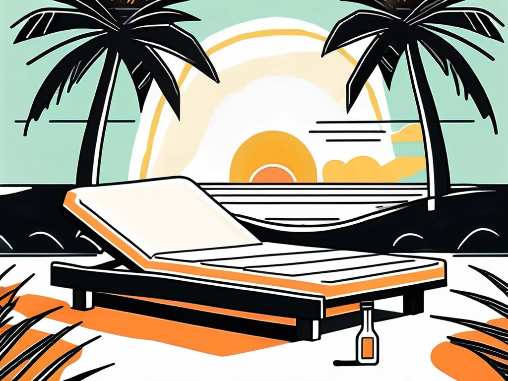
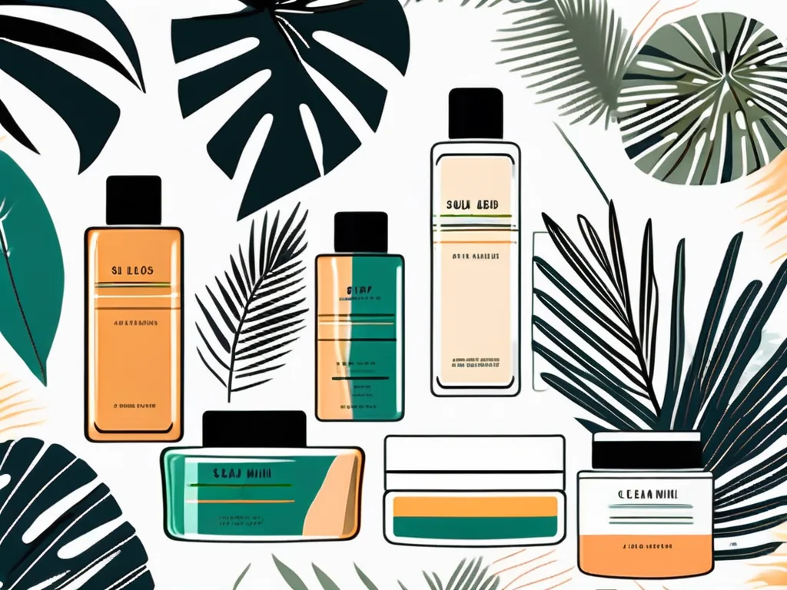

Loțiunile de bronzare la solar sunt produse cosmetice speciale formulate pentru a fi utilizate în timpul ședințelor de bronzare artificială. Spre deosebire de cremele solare obișnuite, aceste loțiuni sunt concepute să amplifice și să optimizeze rezultatele bronzării, oferind în același timp beneficii importante pentru piele.
Ce sunt loțiunile de bronzare la solar?
Loțiunile de bronzare la solar sunt formule cosmetice avansate care conțin ingrediente active special alese pentru a stimula producția de melanină și a maximiza efectul razelor UV din cabinele de bronzare. Ele diferă fundamental de produsele de protecție solară utilizate la plajă.

Ingrediente active principale
Formulele moderne conțin o combinație de ingrediente benefice:
- Melanina — pigmentul natural al pielii care absoarbe razele UV
- Carotenul — antioxidant natural care stimulează producția de pigment
- Tocoferolul (Vitamina E) — protejează celulele de stresul oxidativ
- Aloe vera — hidratare intensă și calmare a pielii
- Ulei de cânepă — hrănire profundă și echilibru al pielii
- Extracte vegetale și antioxidanți — protecție și regenerare celulară
Beneficiile utilizării loțiunilor de bronzare
Îmbunătățirea procesului de bronzare
Principalul avantaj al loțiunilor de bronzare este că activează melanocitele — celulele responsabile de producerea melaninei — pentru o pigmentare mai uniformă și mai intensă. Fără loțiune, o mare parte din energia UV se pierde, iar bronzul apare mai lent și mai neuniform.
💡 Studiile arată că utilizarea unei loțiuni de bronzare poate crește eficiența unei ședințe cu până la 50%, comparativ cu bronzarea fără loțiune.
Hidratare și îngrijire a pielii
Pielea bine hidratată absoarbe razele UV mai eficient și se bronzează mai uniform. Loțiunile de calitate mențin nivelul optim de umiditate al pielii și conțin vitaminele A, C și E care contribuie la sănătatea și elasticitatea pielii pe termen lung.

Cum să alegi loțiunea potrivită?
Tipuri de loțiuni disponibile
- Loțiuni bronzante (Bronzers) — conțin pigmenți cosmetici care oferă o culoare imediată, vizibilă chiar după prima ședință
- Loțiuni acceleratoare — stimulează producția naturală de melanină fără pigmenți artificiali, pentru un bronz treptat și natural
- Loțiuni hidratante intense — ideale pentru piele sensibilă sau uscată, pun accentul pe îngrijire și hidratare
Considerații în funcție de tipul de piele
Alegerea loțiunii trebuie să țină cont de tipul tău de piele. Pielea deschisă la culoare beneficiază mai mult de acceleratoare care stimulează treptat melanina, în timp ce pielea medie sau închisă poate folosi bronzere pentru un efect imediat mai spectaculos.
Cum să folosești loțiunile de bronzare corect?
Aplicarea corectă face diferența dintre un bronz uniform și unul pătrat sau neuniform:
- Exfolierea prealabilă — curăță pielea de celulele moarte pentru o absorbție uniformă
- Aplică cantitatea recomandată — de obicei 2-3 ml pentru întregul corp, distribuite uniform
- Masaj circular — aplică prin mișcări circulare pentru a asigura distribuția uniformă
- Insistă pe zone uscate — coate, genunchi și glezne absorb mai multă loțiune
- Nu aplica pe față — folosește produse speciale pentru față, mai ușoare
Sfaturi de siguranță
Respectă durata sesiunii recomandate de personalul salonului. Fă pauze regulate între ședințe pentru a lăsa pielea să se regenereze. Hidratează zilnic cu loțiune after-tan pentru a prelungi bronzul și a menține pielea sănătoasă.
Riscuri și precauții
Deși loțiunile de bronzare sunt în general sigure, pot apărea reacții de sensibilitate la anumite ingrediente. Dacă ai piele sensibilă, testează produsul pe o zonă mică înainte de utilizare generalizată. Alege întotdeauna produse de calitate, achiziționate din surse autorizate.
Întrebări frecvente
Cât de des pot folosi loțiunea de bronzare?
Poți folosi loțiunea la fiecare ședință de bronzare. Între ședințe, aplică loțiunile after-tan pentru hidratare și menținerea culorii.
Funcționează loțiunile de bronzare și afară, la soare?
Loțiunile pentru solar sunt formulate specific pentru razele UV artificiale din cabine. Nu le folosi la soare natural fără protecție solară adăugată — nu oferă protecție SPF.
La SUNCLUB, echipa noastră te ajută să alegi loțiunea potrivită tipului tău de piele și obiectivelor tale de bronzare. Nu ezita să ne întrebi!
Concluzie
Utilizarea loțiunilor de bronzare la solar nu este un moft, ci o investiție inteligentă în calitatea și sănătatea bronzului tău. Rezultate mai rapide, mai uniforme și mai durabile, combinate cu îngrijirea pielii — acestea sunt beneficiile pe care le obții cu produsul potrivit. Vino la SUNCLUB și descoperă gama noastră de loțiuni premium!